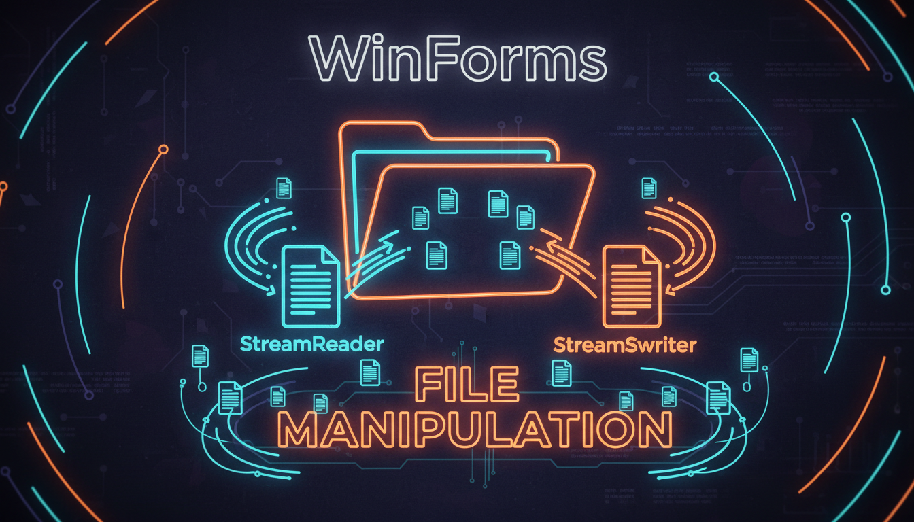

StreamReader, StreamWriter, Open/Save

using namespace System::IO;
// Читання файлу
void OpenFile(String^ filePath) {
try {
StreamReader^ reader = gcnew StreamReader(filePath);
textBox->Text = reader->ReadToEnd();
reader->Close();
this->Text = Path::GetFileName(filePath) + " - Редактор";
}
catch (Exception^ ex) {
MessageBox::Show("Помилка: " + ex->Message);
}
}
// Збереження файлу
void SaveFile(String^ filePath) {
try {
StreamWriter^ writer = gcnew StreamWriter(filePath);
writer->Write(textBox->Text);
writer->Close();
isModified = false;
}
catch (Exception^ ex) {
MessageBox::Show("Помилка збереження: " + ex->Message);
}
}
// Перевірка модифікації перед закриттям
void OnFormClosing(Object^ sender, FormClosingEventArgs^ e) {
if (isModified) {
DialogResult result = MessageBox::Show(
"Зберегти зміни?", "Підтвердження",
MessageBoxButtons::YesNoCancel);
if (result == DialogResult::Yes) {
SaveFile(currentFilePath);
}
else if (result == DialogResult::Cancel) {
e->Cancel = true;
}
}
}